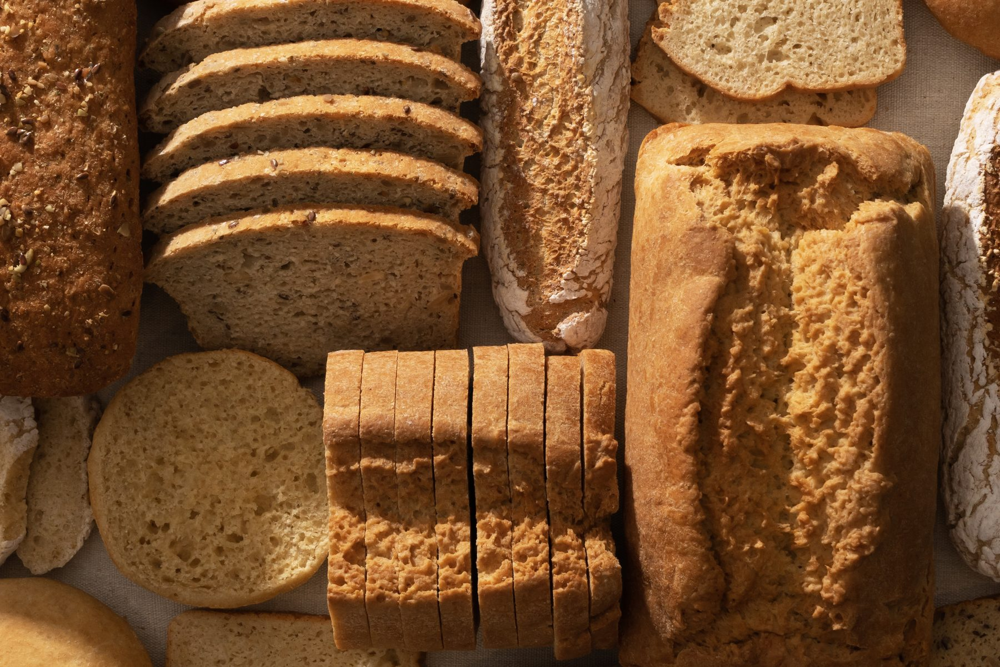
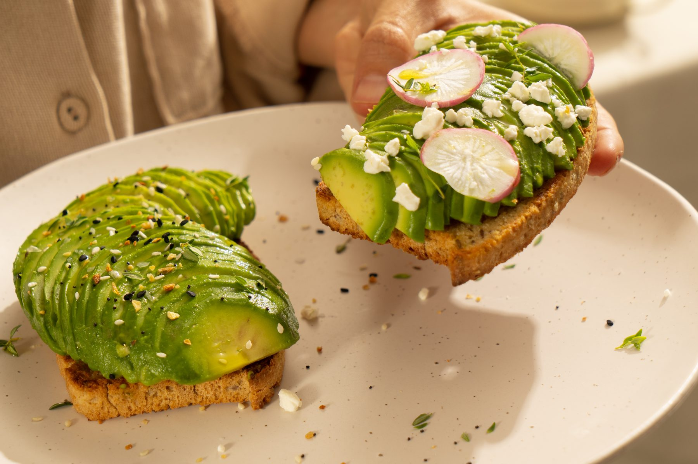
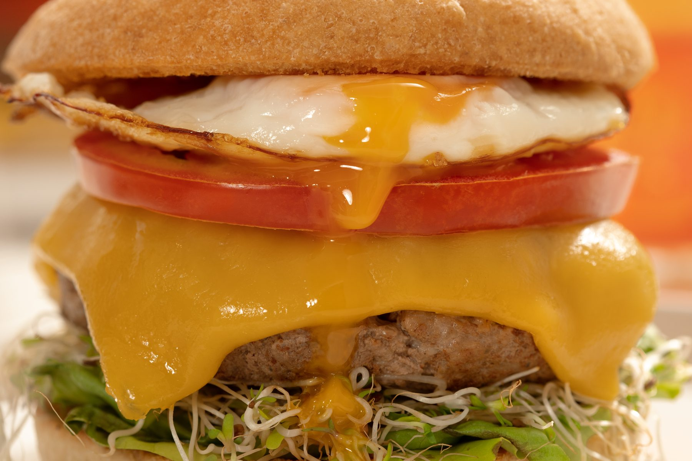
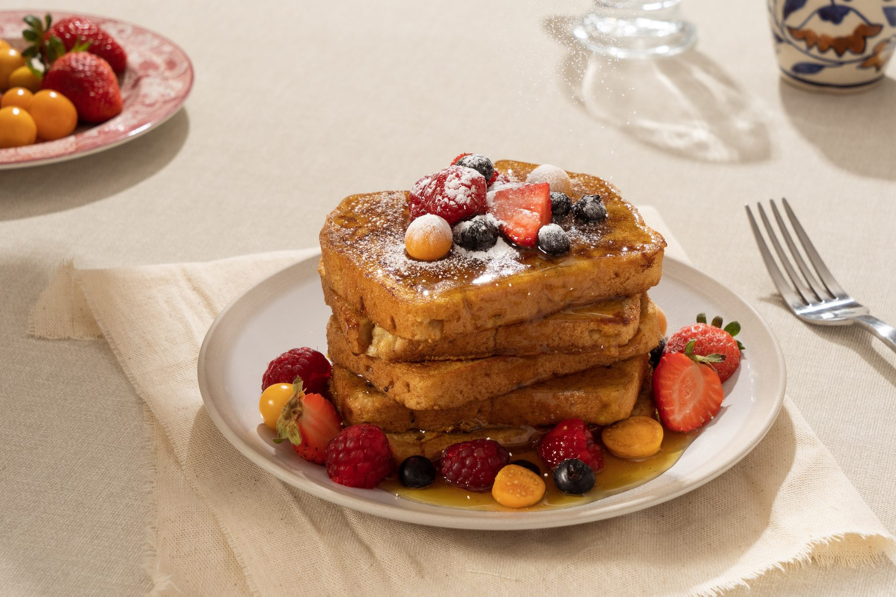
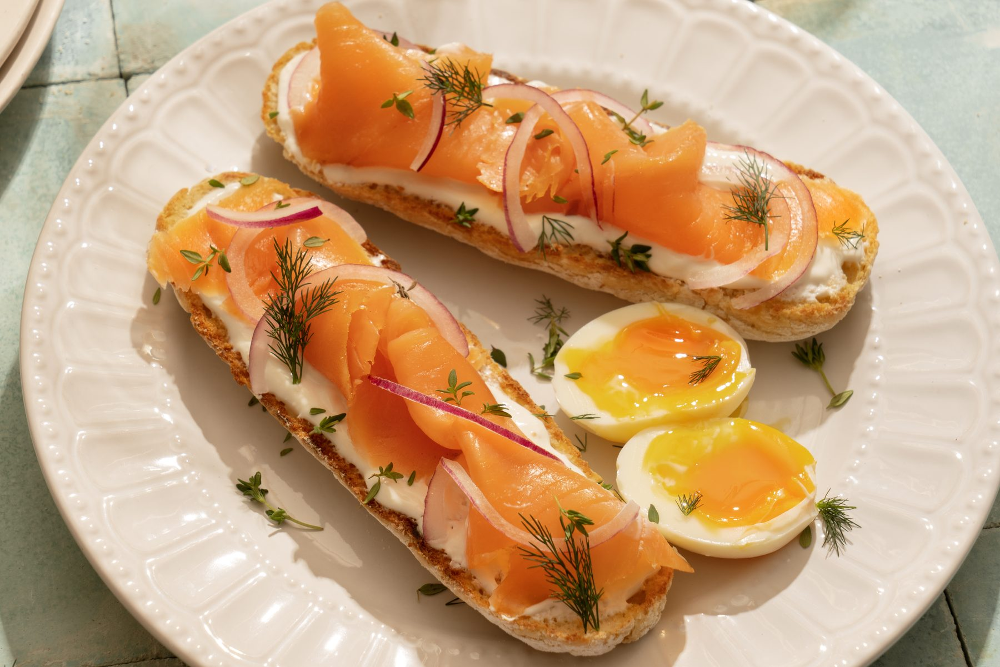

-

-

-

-

-

Pan de verdad.Sin gluten.
Hecho con los mejores ingredientes, naturalmente libres de gluten.
Nuestro mantra
- delicioso
- saludable
- gluten free
True Food es una forma de vivir: comer bien y sentirse bien, sin renunciar a nada. Y empieza por la primera regla — si no es divino, no es True Food.
Lo que nos hace diferentes
Primero tiene que ser rico.
Si no es divino, no es True Food. Esa es la primera regla.
-
Certificado Gluten Free
Estamos certificadas a 5 ppm, cuando el estándar internacional para decir «gluten free» son 20.
-
Planta propia
Producimos nosotras, en Costa Rica, con trazabilidad completa de cada lote. Nada se fabrica afuera.
-
Pruebas todos los meses
Pruebas de laboratorio en superficies y en producto terminado, mes a mes. No es una certificación y ya.
-
Ingredientes de verdad
Harina de avena certificada libre de gluten, aceite de oliva, huevo. Sin lácteos y sin nueces.